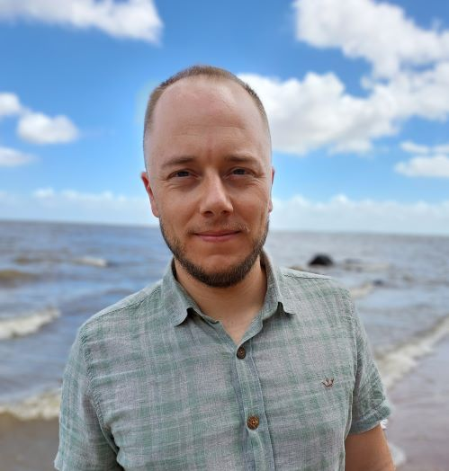

André L. Luza
André joined the team – as of February 2024 – as a post-doctoral researcher (Universite de Bordeaux\INRAE)

André’s research spans a wide range of organisms and subjects within ecology, with a focus on population ecology, community ecology, and macroecology and macroevolution. He also likes to do explicit connections between separate subjects (e.g., ecology-epidemiology, macroecology-macroevolution-paleontology, functional ecology-fisheries-food security), which turns out to be a very interesting, captivating and dynamic way of doing research.
He works with Frédéric Barraquand and Didier Alard on parameter estimability and identifiability of site-occupancy models, a class of hierarchical models used to model species distributions for one or more focal species, considering that their presence may be overlooked. He also hopes to develop this line of research in the context of integrated species distribution models.
Selected publications:
Luza, A. L., Alard, D., Barraquand, F. Evaluating multi-season occupancy models with autocorrelation fitted to heterogeneous datasets. ArXiv 2025, 2510.08151.
Paludo, P., Luza, A. L. Pereira, M. J. R. Landscape and the occupancy of pampean grassland birds: Modelling site occupancy through acoustic detection. Austral Ecology 2025, 50, e70084.
Destri, G., Güth, A.Z., Luza, A.L., Ibanhez, J.Y., Dottori, M., Silveira, I.C.A., Braz, G.B., De La Cour, J.L., Manzello, D.P., Skirving, W.J. and Mies, M. The thermal stress history of South Atlantic reefs reveals increasing intensity, duration, frequency, and likely undocumented bleaching episodes. Global Change Biology 2025, 31, e70162.
Luza, A. L., Bender, M. G., Ferreira, C. E. L., Floeter, S. R., Francini-Filho, R. B., Longo, G. O., Pinheiro, H. T., Quimbayo, J. P., & Bastazini, V. A. G. Coping with collapse: Functional robustness of coral-reef fish network to simulated cascade extinction. Global Change Biology 2024, 30, e17513.
Luza, A.L., Rodrigues, A.V., Mamalis, L., Zulian, V. Spatial distribution of the greater rhea, Rhea americana (Linnaeus, 1758), in Rio Grande do Sul, southern Brazil: citizen-science data, probabilistic mapping, and comparison with expert knowledge. Ornithology Research 2023, 31, 253–264.
Some current key collaborators Rede PPBio IntegraMar,Reef Synthesis Working Group, Mariana Bender, Cristian Dambros, Vinicius Bastazini, Miguel Mies, Renan Maestri, Fernando d’Horta.
Contact
andre (hyphen) luis (dot) luza at u-bordeaux.fr
andre (hyphen) luis (dot) luza at inrae.fr